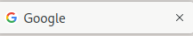

Este laboratorio se centra en la exploración y descubrimiento de contenido oculto o no destinado al acceso público en sitios web, un proceso crucial para pentesters.
LAB LINK: Descubrimiento de Contenidos Web
LAB difficulty: Fácil
Published on August 08, 2024 by Jose Luis Venega
LAB
Para un pentester el contenido que se puede descubrir son cosas que no se presentan de inmediato y que no siempre fueron destinadas al acceso público.
Este contenido puede ser: versiones anteriores de la página web, archivos de backup (copias de seguridad), archivos de configuración, etc.
Existen tres formas para poder descubrir contenido en un sitio web:
El archivo Robots.txt es un documento de texto que le dice a los motores de búsqueda qué páginas pueden y no pueden mostrar en los resultados de su motor de búsqueda o prohíben determinados motores de búsqueda que rastreen el sitio web por completo.
Este archivo nos puede dar una gran lista de ubicaciones en el sitio web que los propietarios no quieren que descubramos como pentester.
Para acceder a él —> https://nombre_pagina_web/robots.txt
Favicon es una pequeño icono que muestra la barra de direcciones del navegador o en la pestaña utilizada para marcar un sitio web.
En el caso de Google sería:

Al construir una página web, si el desarrollador no reemplaza este icono por uno personalizado, en este caso el de Google, podemos saber que framework se está utilizando.
OWASP contiene una base de datos con todos los iconos usados: Favicon-DB
Si un sitio web no usa un icono personalizado, en el código fuente de la página web podemos encontrar como se llama el favicon, pudiendo así descargarlo y obtener el MD5 hash y cotejarlo con la base de datos de OWASP.
Ejemplo en consola de Linux —> curl [https://pagina_web/nombre_archivo.ico](https://pagina_web/nombre_archivo.ico) | md5sum
Este archivo ofrecen una lista de todos los archivos que el propietario del sitio web desea que aparezcan en un motor de búsqueda, a diferencia de robots.txt que restringe quien puede verlos.
Accedemos de igual manera que robots.txt —> https://nombre_pagina_web/sitemap.xml
Cuando hacemos peticiones al servidor web, este devuelve varios encabezamos HTTP. En estos encabezados podemos encontrar información sobre el software del servidor web, el lenguaje de programación o scripts en uso.
Con esto podemos buscar vulnerabilidades o versiones vulnerables del software empleado.
Al hacer un curl direccion_pagina_web -v , donde “-v” habilita el modo detallado y que generará los encabezados.
Una vez obtenido el marco del sitio web ( ya sea a través del favicon o buscando pistas en el código fuente del sitio web), podemos localizar el sitio web del marco. De esta manera podemos buscar información sobre el software del marco ó más información sobre el mismo.
OSINT son recursos externos de libre acceso que nos ayuda a descubrir información sobre un sitio web.
Google Hacking / Dorking hace uso de funciones avanzadas del motor de búsqueda de Google, permitiendo filtrar contenido personalizado.
Por ejemplo, puedes buscar información en un dominio concreto con site:nombre_dominio criterio_a_buscar
Wappalyzer es una herramienta en línea y una extensión del navegador que ayuda a identificar que tecnologías usa una página web (marcos, procesadores de pago ,etc..).
Wayback Machine es un archivo histórico de sitios web que se remonta a finales de los años 90. Puedes buscar un nombre de dominio y mostrará todas las veces que se guardó el contenido de la página web.
GitHub hace uso del control de versiones de Git para alojar proyectos. Encontramos repositorios públicos o privados donde hay proyectos que contienen código fuente, contraseñas y otro contenido que puede ser sensible para las empresas.
Es un servicio de almacenamiento proporcionado por Amazon AWS, que permite guardar archivos e incluso contenido estático del sitio web que son accesibles mediante HTTP y HTTPS.
El propietario de los archivos puede establecer permisos de acceso haciendo que los archivos sean públicos, privados e incluso de escritura.
A veces estos permisos se establecen incorrectamente y permiten inadvertidamente el acceso a archivos que no deberían ser públicos.
Los S3 Buckets pueden detectarse de diversas formas ( encontrando URLs en el código fuente de la página web, en repositorios de GitHub o automatizando el proceso ).
El descubrimiento automatizado es el proceso de hacer uso de herramientas con el fin de descubrir contenido sin hacerlo de manera manual.
Hacemos uso de las llamadas ‘wordlists’, que son ficheros de texto que contienen una gran cantidad de credenciales. Las wordlist más comunes contienen contraseñas y nombres de usuarios.
Podemos hacer uso de estás herramientas junto con las wordlist para poder descubrir contenido. Hay muchísimas herramientas disponibles pero nos centraremos en estas tres, ya que vienen preinstaladas con el sistema.
ffuf -w ruta_de_la_wordlist -u http://ip_maquina/FUZZ
dirb http://ip_maquina/ ruta_de_la_wordlist
gobuster dir --url http://ip_maquina/ -w ruta_de_la_wordlist